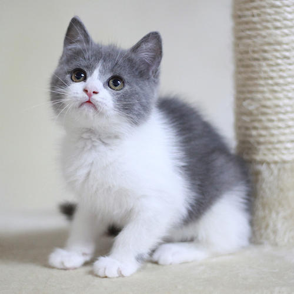

猫猫图书馆
猫猫图书馆
英国短毛猫，体形圆胖，四肢粗短发达，毛短而密，头大脸圆， 温柔平静，对人友善，极易饲养。大而圆的眼睛根据被毛不同而呈现各种颜色。作为一个古 老的猫品种，其历史可追溯至古罗马时期的家猫，由于拥有悠久的育种历史，可以称得上是 猫家族中的典范。英国短毛猫除了拥有固定而聚，代表性的遗传特征之外，又具有丰富的变 异性，如背毛色眼睛颜色等。更重要的是，有了广泛的配种历史后，这种猫拥有了更健康的 身体和更温驯的性格。
|
|
|---|---|
|
 英国短毛猫，体形圆胖，四肢粗短发达，毛短而密，头大脸圆， 温柔平静，对人友善，极易饲养。大而圆的眼睛根据被毛不同而呈现各种颜色。作为一个古 老的猫品种，其历史可追溯至古罗马时期的家猫，由于拥有悠久的育种历史，可以称得上是 猫家族中的典范。英国短毛猫除了拥有固定而聚，代表性的遗传特征之外，又具有丰富的变 异性，如背毛色眼睛颜色等。更重要的是，有了广泛的配种历史后，这种猫拥有了更健康的 身体和更温驯的性格。 |
|
| 版权所有 © LHT | |